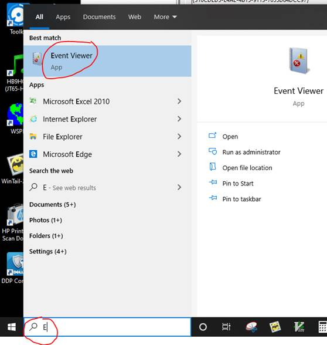
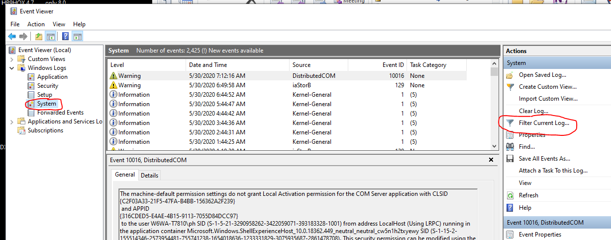
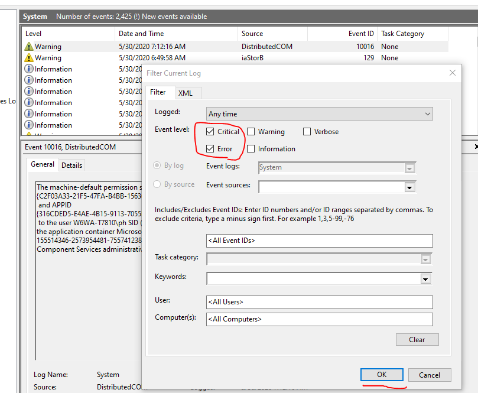
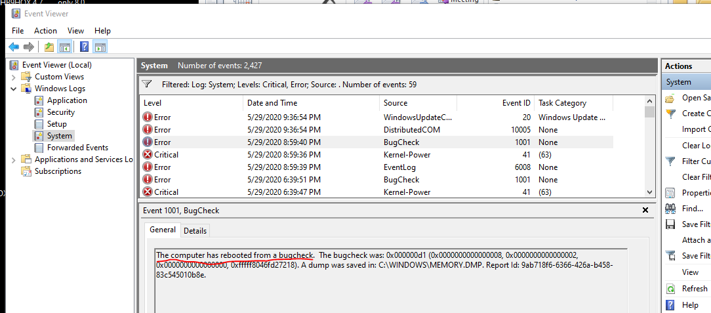
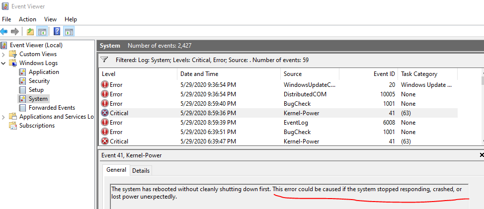
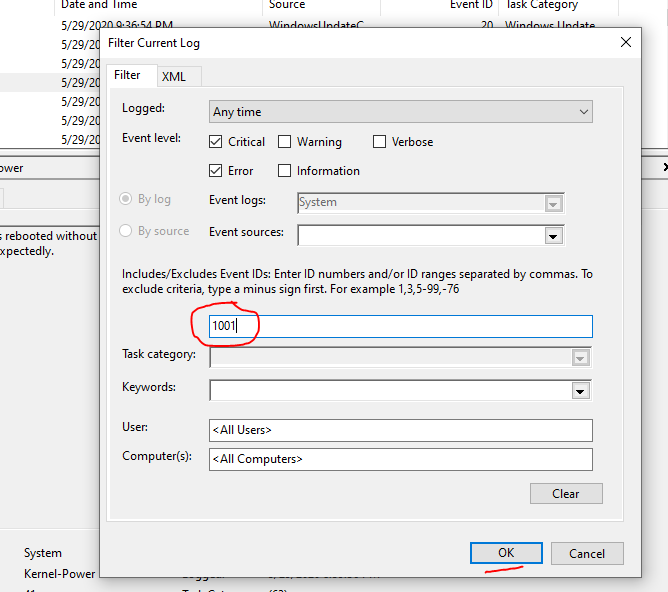
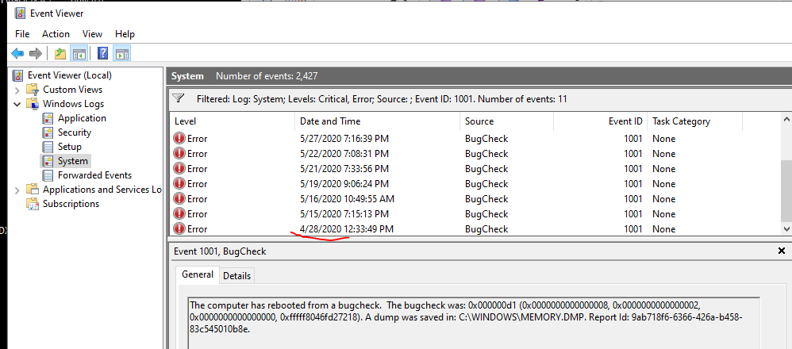
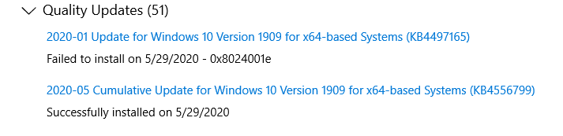
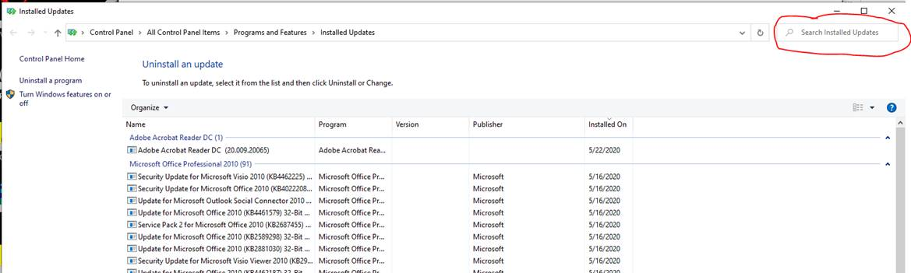

My pleasure Ross. Tried to write it as best I could for non-IT folks with pictures and such. For guys like you, I’d hum you a few bars and off you’d go. Those newsletters sound handy! 73, Paul, W6WA From: RForbes - K6GFJ [mailto:K6GFJ@COMCAST.NET] Hi Paul, Thank you for an excellent tutorial on how you are tracking down your BSoD issues. While it might be over the heads of many members, who I often wonder if they can even spell PC, for those of us who were in the IT world, I really appreciate your e-mail. I’ve been in this situation many times both with Windows and way back with Novell networks. I believe a couple of Windows newsletters have warned users not to install certain updates, and it sounds like you were hit by one of the updates. Please keep us posted on your progress. I’m retired after spending many years in the IT departments of a major law firm and then for almost 20 years with a venture capital firm. 73, Ross K6GFJ From: Chat <chat-bounces@ncdxc.org> On Behalf Of Paul Hernandez via Chat All, When 6m starts to wake up in the summer, my habit is to on occasion, leave WSJT-X on 24x7 and the PC volume up high so I can hear alerts from downstairs. Truly a voice from above! Any lock up issues with a PC will often manifest themselves in such a burn-in scenario. Sure enough, since about the end of last month I started finding that the radio PC was rebooting itself and then finally I was sitting in front of it when it hit the infamous Blue Screen of Death. I’d recalled some concerns surfaced here so it was time to dig in. BSoD happens when Windows hits a fault condition in its kernel, due most often to a hardware issue or a corrupt or buggy driver SW to said HW. The only recourse the OS has at that point is a core dump of all that is in memory to a file, provided you have the disk space available. This file can then be analyzed by a coder/developer using a debugger to hopefully see a stacktrace pointing to the offending issue/line of code. Not an activity for us mere mortals. I’ll provide you with a tutorial of what I did yesterday evening to 1) discover the crash and determine how long they have been going on 2) Determine the latest KB Updates installed on the PC and then uninstalling them 3) For now, stop automatic Windows Update lest the problem return After doing these steps, my PC is still up and running WSJT-X. Not necessarily enough time perhaps to confirm I’m out of the woods … but maybe. The Windows Event Viewer is the way to look at logging output that is done by the operating system and also applications. Here is one way to launch it:  I’ve expanded the Windows Logs folder since I’m interested in seeing the lines in the System log that Windows deems either an “Error” or worse, “Critical”. After selecting “System” as shown below, select “Filter Current Log…”  and let’s select the two check boxes shown and hit “OK”:  The now filtered system log shows only red items, and by selecting the most recent “BugCheck” line from last night, and also the “Kernel-Power” line before it we see the smoking gun:  and  So now I was curious to see how long the Event 1001 “BugCheck” above has been going on. We can further filter the log to just show these “Event 1001” lines using:  and we see, after scrolling back to the earliest time:  It appears that during recent times when I’ve left the radio PC on monitoring 6m FT8, I see that the BSoD’s can happen within a 24 hour period, and they began at the end of last month. Understand that this date will vary for you depending on when you had the PC on so Windows Update could do its thing. In other words the KB’s shown below could have been available earlier but the PC wasn’t on to install them. Most of you know how to launch “Windows Update”. Do so, and select “View Update history”:  These are my two most recently installed OS updates. Note that both had dates in April but because I’d yet not turned off the auto-update feature, they tried to zombie back on last night after I un-installed them. More on how I stopped them later. I wanted to peel them off one at a time from the most recent to see when/if I could stop the BSoD’s. So I read here about KB4556799. Sobering. Time to uninstall that mess of a KB. At the top of the same “View Update history” select “Uninstall updates” and you’ll see:  I typed KB45567999 in the circled Search field and hit enter which found the relevant line for this KB. Selecting this line with a right-click of the mouse displays the uninstall choice After the uninstall and subsequent reboot to finish the process I got real lucky. I’d expected to have to wait 24 hours for the next BSoD, but I was piddling around that shack and within the hour it blue screened again. Time to rinse and repeat as above but this time with the next one, KB4497165. But as you saw from the 5/29 dates above, once I uninstalled the second KB, the first had already come back and after some time the second as well. That would not do. So before uninstalling them again it was time to disable to auto update until Redmond resolves the mess. I recall that in win7 and earlier, this was easy to do right in the Windows Update form’s “Advanced options”. Now that form only has the ability to “defer” an update for some days. Found this online and I chose Option 3) which uses the Group Policy Editor in Windows. In re-reading this for typo’s, I see it will be hard to pinpoint which KB (or both) is causing me the issue since the first re-installed and could have caused the BSoD. For now I am leaving them both out of the picture. As mentioned up front, the PC is still up. Way too early to tell of course, and I promise to report back to you in the following days/weeks to confirm the issue was resolved. By the way my radio PC is a Dell T7810 with two SDD hard drives in Raid 1. Yup, belt and suspenders friends. It is unclear how correlated these issues are with my specific HW platform versus what you are running as not much found on that by googling around. But for now, back to 6m! Hope this was useful and something to keep around for, sadly, the next time. 73, Paul W6WA My bio for those interested (42 years):
|